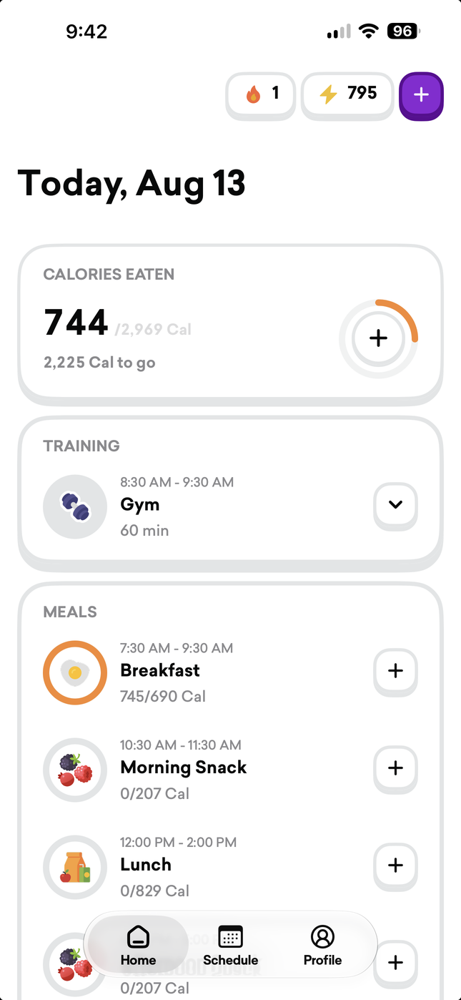
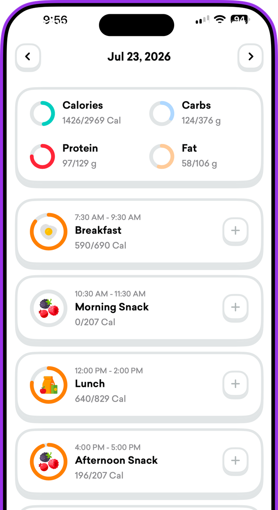
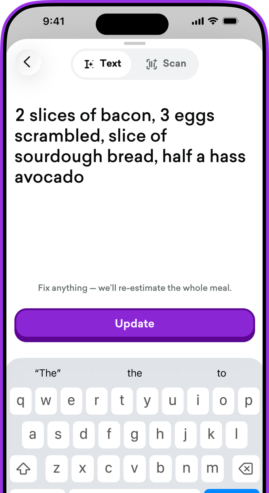

Fueling that
knows your day
A nutrition app for competitive athletes. Every meal gets its own time window and targets, built around the training you actually do.

The plan is there before you are
Breakfast, lunch, dinner, and the snacks between — each with its own time window and its own targets.

Training changes the plan
Add a session and the day rebuilds around it. Rest tomorrow and tomorrow looks different, because it is.
Food data you can check
Describe a meal in your own words. Every number traces back to a source you can open and correct yourself.
